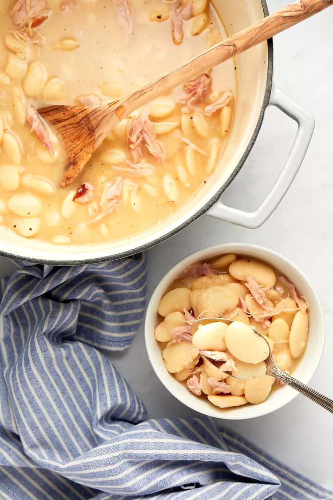

~~Introducing our 3rd signature Comfort Eats "CREAMY SOUTHERN LIMA BEANS"

Creamy Southern Lima Beans
PREP TIME(15 MINS)
|
| COOK TIME(2 hr) |
| TOTAL TIME(2 hr 15 mins) |
| SERVINGS( 6 - 8 servings) |
~Ingredients
- 1 pound dry large lima beans
- 1/2 large white onion, chopped (about 1 1/2 cups)
- 4 cloves garlic, finely chopped
- 1 tablespoon garlic powder
- 1 tablespoon onion powder
- 2 teaspoons salt
- 1 teaspoon black pepper
- 1 bay leaf
- 2 smoked turkey wings
- 8 cups chicken stock (preferably unsalted or low-sodium)
- Additional salt and pepper to taste
~~METHOD:
~ Pick over the dry beans:
Pick over the beans, removing any dirt or debris. Rinse the beans in a colander; drain.
Lima Beans in a Colander for Southern Lima Beans Recipe
~ Cook the beans:
Place the beans, onion, garlic cloves, garlic powder, onion powder, salt, black pepper, bay leaf, and turkey wings in a large Dutch oven or pot.
Add the stock. Bring to a boil over medium-high heat.
Once it starts to boil, decrease the heat to medium-low. Cover with a lid.
Simmer for up to 2 hours or until the beans are tender to your liking. Make sure to stir the mixture a few times while cooking for a creamier sauce.
~Pick the meat from the turkey wings:
Using tongs, remove the turkey wings and let them cool until you can comfortably handle them. Remove the cooked meat from the bones using a fork and shred; discard the skin. Place the meat back in the pot.
Remove the bay leaf; discard.
.
~ Season and serve:
Taste the beans and season with additional salt and pepper, if needed
~Serve warm